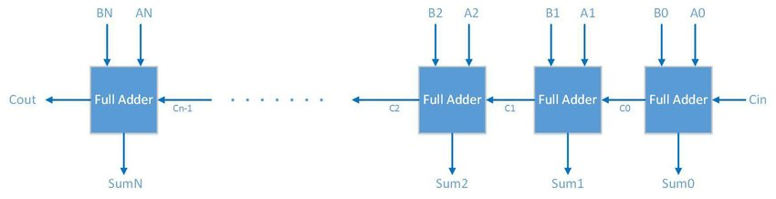
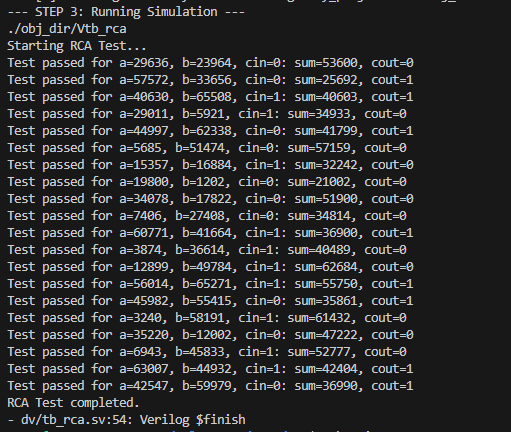
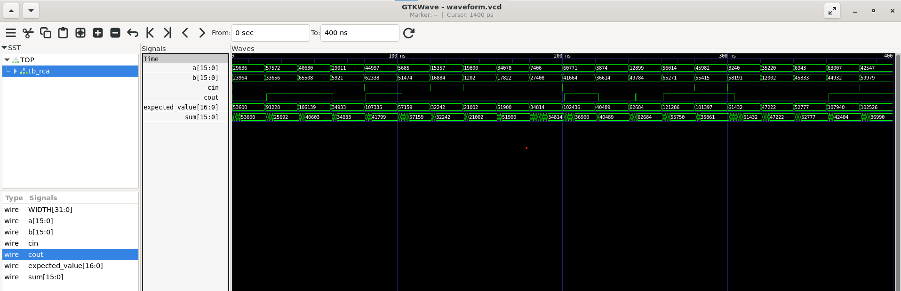

Log 2: The Architecture of Addition
The Pivot: From "What" to "How"
In RTL design, there is a big difference between describing what a circuit does and defining how it is built. In Log 1, we used 'Behavioral Modeling', writing high-level code and letting the computer decide the underlying gates. Now, we are moving to Structural Modeling, where we act as architects. Instead of just writing equations, we are manually connecting smaller building blocks to form a larger, more complex system.
The Mission: Structural Integration
In this log, we move from behavioral modeling to structural design by building a Parameterizable Ripple Carry Adder (RCA).
The goal is to learn how to build a scalable system from small, verified sub-modules. By connecting these modules together like Lego bricks, we move away from coding where the internal logic is hidden and toward intentional design. This is a deep dive into how complexity is managed when every gate and every wire is a deliberate choice.
Module: 1-Bit Full Adder
1. The Functional Specification
The Full Adder is the basic building block of arithmetic circuits. It includes a carry-in bit, which allows multiple units to be chained together for multi-bit addition.
- Calculates the binary sum of
a,b, andcin. - Generates a
coutif at least two inputs are high.
Interface Definition
First, we will make a table showing our module's inputs and outputs.
| Signal Name | Direction | Width | Description |
|---|---|---|---|
| a | Input | 1 | First input bit |
| b | Input | 1 | Second input bit |
| cin | Input | 1 | Carry-in from previous stage |
| sum | Output | 1 | Sum output |
| cout | Output | 1 | Carry-out output |
According to our table, we can now write the header for our module in SystemVerilog.
adder_1bit.sv module header
`timescale 1ns/1ps
module adder_1bit (
input logic a,
input logic b,
input logic cin,
output logic sum,
output logic cout
);
2. Architectural Planning
sum = a XOR b XOR cincout = (a AND b) OR (cin AND (a XOR b))
Without this delay, the simulation would treat the logic as instantaneous, updating outputs in the same timestamp as inputs. Adding the delay forces the simulator to wait 1ns, allowing us to visualize the "ripple" effect in waveform viewers as the carry signal propagates through the logic over time.
Note that these delays are for simulation only. Hard-coded time delays are non-synthesizable; synthesis tools for FPGAs or ASICs ignore them completely. In real hardware, delays are determined by the physical properties of transistors and wiring, not the code.
3. Implementation
We use assign statements to define the logic as a continuous connection. This ensures the output is automatically re-calculated whenever an input changes, effectively modeling the physical wiring of the gates.
Source: adder_1bit.sv
`timescale 1ns/1ps
module adder_1bit (
input logic a,
input logic b,
input logic cin,
output logic sum,
output logic cout
);
// Logic for Sum and Carry-out with simulated gate delay
assign #1 sum = a ^ b ^ cin;
assign #1 cout = (a & b) | (cin & (a ^ b));
endmodule
Summary:
This 1-bit module provides the fundamental logic for binary addition. With the 1-bit Adder defined, we can now scale this into a multi-bit Ripple Carry Adder (RCA) by chaining these blocks together using structural hierarchy.
Module 2: Ripple Carry Adder (RCA)
1. The Functional Specification
The Ripple Carry Adder (RCA) scales 1-bit full adder logic to handle WIDTH-bit wide data buses. This is our first example of a parameterizable structural design.
- Purpose: To perform
WIDTH-bit binary addition by chaining 1-bit adders. - Behavior:
- Uses the
WIDTHparameter to instantiate the required number of full adders. - Connects the carry-out of each bit to the carry-in of the next (rippling).
- Outputs a final carry-out bit to indicate overflow.
- Uses the
RCA Block Diagaram
Interface Definition
Parameters:| Parameter Name | Type | Default Value | Description |
|---|---|---|---|
| WIDTH | int | 8 | The bit-width of the addition operands |
| Signal Name | Direction | Width | Description |
|---|---|---|---|
| a | Input | WIDTH | Augend input bus |
| b | Input | WIDTH | Addend input bus |
| cin | Input | 1 | Initial carry-in |
| sum | Output | WIDTH | Sum output bus |
| cout | Output | 1 | Final carry-out bit |
According to our tables, we can define the parameterizable module header as follows:
View Module Declaration
module rca #(
parameter WIDTH = 8
) (
input logic [WIDTH-1:0] a, b,
input logic cin,
output logic [WIDTH-1:0] sum,
output logic cout
);2. Architectural Planning
- Theory of Operation: We perform
WIDTH-bit addition by chainingWIDTHinstances ofadder_1bit. We create an internalcarry_chainwire of sizeWIDTH + 1to bridge the carry signals. - Structural Hierarchy: Instead of using the
+operator, we "wire" the blocks together.carry_chain[0]is driven by the globalcin, and the finalcarry_chain[WIDTH]drives the globalcout.
3. Step-by-Step Implementation
3.1 Internal Nets
First, we declare the internal carry chain and connect the starting carry-in.
View Internal Nets
// Carry chain connects bit i to bit i+1
logic [WIDTH:0] carry_chain;
assign carry_chain[0] = cin;3.2 The Generate Loop
To avoid manually instantiating every bit, we use a generate block to stamp out the required number of 1-bit adders based on the WIDTH parameter.
inside this loop we assign the inputs and outputs of each adder_1bit instance to the appropriate bits of a, b, sum, and carry_chain.
The Generate Block: Think of this as a "copy-paste" engine for hardware. While it looks like a standard software loop, it does not execute at runtime. Instead, the compiler evaluates the loop during the elaboration phase to physically replicate the hardware logic inside it multiple times, creating a distinct set of gates and wires for every iteration.
The Genvar: This is a temporary iteration variable used exclusively by the compiler to manage the generate loop. It exists only during design elaboration and does not represent a physical signal or register in the final circuit.
View Implementation
genvar i;
generate
for (i = 0; i < WIDTH; i = i + 1) begin : adder_loop
adder_1bit u_adder (
.a (a[i]),
.b (b[i]),
.cin (carry_chain[i]),
.sum (sum[i]),
.cout(carry_chain[i+1])
);
end
endgenerate
assign cout = carry_chain[WIDTH];
endmoduleFull RCA Module Code
The full code is provided below.
View Full rca.sv
//parameterized ripple carry adder module
`timescale 1ns/1ps
module rca #(
parameter WIDTH = 8
) (
input logic [WIDTH-1:0] a,
input logic [WIDTH-1:0] b,
input logic cin,
output logic [WIDTH-1:0] sum,
output logic cout
);
logic [WIDTH:0] carry_chain;
assign carry_chain[0] = cin;
// declare genvar loop variable
genvar i;
// generate block to instantiate multiple 1-bit adders
generate
for (i = 0; i < WIDTH; i = i + 1) begin : adder_loop
adder_1bit u_adder_1bit (
.a (a[i]),
.b (b[i]),
.cin (carry_chain[i]),
.sum (sum[i]),
.cout(carry_chain[i+1])
);
end
endgenerate
assign cout = carry_chain[WIDTH];
endmodule
Summary:
The RCA module demonstrates how to scale simple logic into a complex system. With the hardware architecture finalized, we now move to the verification phase to build a testbench and prove our design works as intended.
Verification Strategy and Automation
In order to simulate our RCA we will focus on two critical files: the SystemVerilog Testbench (TB), which provides the stimulus and checking logic, and the Makefile, which automates the compilation and execution process.
Because we are simulating a combinational Ripple Carry Adder (and no sequential logic that requires a clock), we do not need to manually write a C++ wrapper. Verilator is capable of automatically generating the execution kernel from our SystemVerilog initial blocks and timing delays.
The Functional Specification (tb_rca.sv)
We will build a testbench that validates the function of our RCA by generating random values for it to add, and comparing the results to a "golden model" - the built in adder function.
- Purpose: To verify the logical correctness and timing behavior of the
rcamodule.
Interface Definition (Testbench Internal Signals)
The following signals are used within the testbench to drive the inputs of our adder and monitor its response.
| Signal Name | Type | Width | Description |
|---|---|---|---|
| a, b | logic | WIDTH | Randomly generated stimulus inputs |
| cin | logic | 1 | Stimulus carry-in |
| sum | logic | WIDTH | Observed output from the RCA |
| cout | logic | 1 | Observed carry-out from the RCA |
| expected_value | logic | WIDTH+1 | The ideal mathematical result used for comparison |
Based on these requirements, we define the testbench module and its internal logic signals:
View TB Module Declaration
`timescale 1ns/1ps
module tb_rca;
// Parameters
parameter WIDTH = 16;
// Signals to drive the Unit Under Test (UUT)
logic [WIDTH-1:0] a;
logic [WIDTH-1:0] b;
logic cin;
// Signals to observe from the UUT
logic [WIDTH-1:0] sum;
logic cout;
// Golden model reference signal
logic [WIDTH:0] expected_value;Instantiation and Setup
We connect the internal testbench signals to the RCA ports and set up the waveform dumping to view the ripple effect in GTKWave.
View Instantiation Logic
// Instantiate the Unit Under Test
rca #(.WIDTH(WIDTH)) uut (
.a (a),
.b (b),
.cin (cin),
.sum (sum),
.cout(cout)
);
initial begin
$display("Starting RCA Test...");
$dumpfile("waveform.vcd");
$dumpvars(0, tb_rca);Testbench Strategy
The verification flow is built around four key functional phases:
1. Environment Setup
Initialize the simulation and initiate waveform generation for visual analysis.
View Setup Code
initial begin
$display("Starting RCA Test...");
$dumpfile("waveform.vcd");
$dumpvars(0, tb_rca);2. Waveform and Console Logging
We use $display to print status updates to the terminal, while $dumpfile and $dumpvars create a Value Change Dump (VCD) file. This file records every signal transition, allowing us to debug the "ripple" effect visually in a waveform viewer.
View Logging Logic
$display("Starting RCA Test...");
$dumpfile("waveform.vcd"); // VCD file for waveform viewing
$dumpvars(0, tb_rca); // dump all variables in this module3. Randomized Stimulus
Apply a series of randomized inputs to the Unit Under Test (UUT) to ensure it handles various data patterns.
View Stimulus Generation
repeat (20) begin
// generate random inputs
a = 16'($urandom_range(0, 2**WIDTH-1));
b = 16'($urandom_range(0, 2**WIDTH-1));
cin = 1'($urandom_range(0, 1));4. Automated Checking
Implement a "Golden Reference" model (the built-in SystemVerilog adder) and compare our RCA adder results to the reference results.
Timing Margin: Since each 1-bit adder in our design has a 1ns delay, a 16-bit addition requires 16ns to stabilize. We use a #20 delay to ensure the "ripple" has completely settled before we check the result.
View Automated Checking Code
// compute expected outputs
expected_value = 17'(a) + 17'(b) + 17'(cin);
// wait for a short time to allow outputs to stabilize
#20;
// check results
if (sum !== expected_value[WIDTH-1:0] || cout !== expected_value[WIDTH]) begin
$error("Test failed for a=%0d, b=%0d, cin=%0d: expected value=%0d, cout=%0d but got sum=%0d, cout=%0d",
a, b, cin, expected_value[WIDTH-1:0], expected_value[WIDTH], sum, cout);
end else begin
$display("Test passed for a=%0d, b=%0d, cin=%0d: sum=%0d, cout=%0d",
a, b, cin, sum, cout);
end
end
$display("RCA Test completed.");
$finish;
end
endmoduleFull Testbench Code
The consolidated production-ready code is provided below.
View Full tb_rca.sv
`timescale 1ns/1ps
module tb_rca;
parameter WIDTH = 16;
// Stimulus and observation signals
logic [WIDTH-1:0] a, b;
logic cin;
logic [WIDTH-1:0] sum;
logic cout;
logic [WIDTH:0] expected_value;
// Instantiate UUT
rca #(.WIDTH(WIDTH)) uut (
.a(a), .b(b), .cin(cin), .sum(sum), .cout(cout)
);
initial begin
$display("Starting RCA Test...");
$dumpfile("waveform.vcd");
$dumpvars(0, tb_rca);
repeat (20) begin
// Stimulus generation
a = 16'($urandom_range(0, 2**WIDTH-1));
b = 16'($urandom_range(0, 2**WIDTH-1));
cin = 1'($urandom_range(0, 1));
// Wait for propagation delay (RCA "ripple" settle time)
#20;
// Golden model reference
expected_value = 17'(a) + 17'(b) + 17'(cin);
// Self-checking logic
if (sum !== expected_value[WIDTH-1:0] || cout !== expected_value[WIDTH]) begin
$error("FAILED: a=%0d, b=%0d, cin=%b | Expected Sum=%0d, Cout=%b | Got Sum=%0d, Cout=%b",
a, b, cin, expected_value[WIDTH-1:0], expected_value[WIDTH], sum, cout);
end else begin
$display("PASSED: a=%0d, b=%0d, cin=%b | Sum=%0d, Cout=%b",
a, b, cin, sum, cout);
end
end
$display("RCA Test completed successfully.");
$finish;
end
endmoduleSummary:
This testbench will validates the RCA by applying randomized stimuli and verifying the results against a built-in golden model. For our final step, we will implement a Makefile to automate the compilation and execution of the simulation.
The Makefile
As we saw in our first log, a Makefile is an essential tool for streamlining development. Instead of manually re-entering Verilator commands, we use a single make command to automate the build and simulation flow.
1. Variables and File Paths
We begin by defining variables for our tools and source files.
View Variables
# --- Variables ---
VERILATOR = verilator
RTL_DIR = rtl
DV_DIR = dv
TOP_MODULE = tb_rca
# List all source files
SRCS = $(RTL_DIR)/adder_1bit.sv $(RTL_DIR)/rca.sv $(DV_DIR)/$(TOP_MODULE).sv2. Rule Management (.PHONY & all)
To ensure the Makefile works reliably, we use .PHONY to tell the system that commands like clean or compile are not actual files on the disk. We also define the all rule as the default "entry point" to run the entire flow in one go.
View Build Rules
# --- Build Rules ---
.PHONY: all compile run waves clean
# Default target runs everything
all: clean compile run3. Compilation and Execution
These rules define how Verilator transforms our SystemVerilog code into a runnable binary.
- Compile: Converts the SV code into C++ and builds a simulation executable.
- Run: Executes the generated binary to perform the actual simulation.
View Compile and Run Rules
compile:
@echo "--- STEP 1 & 2: Verilating and Building Binary ---"
$(VERILATOR) -Wall --trace --timing --binary \
-I$(RTL_DIR) \
$(SRCS) \
--top-module $(TOP_MODULE) \
-o V$(TOP_MODULE)
run:
@echo "--- STEP 3: Running Simulation ---"
./obj_dir/V$(TOP_MODULE)4. Debugging and Cleanup
The final stages handle post-simulation tasks like viewing waveforms and cleaning the workspace.
View Debug and Clean Rules
waves:
@echo "--- STEP 4: Opening Waveforms ---"
gtkwave waveform.vcd
clean:
@echo "Cleaning up project files..."
rm -rf obj_dir waveform.vcdFull Makefile
Below is the complete, production-ready Makefile. To run the full flow, simply use the command make.
View Full Makefile
# --- Variables ---
VERILATOR = verilator
RTL_DIR = rtl
DV_DIR = dv
TOP_MODULE = tb_rca
# List all source files
SRCS = $(RTL_DIR)/adder_1bit.sv $(RTL_DIR)/rca.sv $(DV_DIR)/$(TOP_MODULE).sv
# --- Build Rules ---
.PHONY: all compile run waves clean
all: clean compile run
compile:
@echo "--- STEP 1 & 2: Verilating and Building Binary ---"
$(VERILATOR) -Wall --trace --timing --binary \
-I$(RTL_DIR) \
$(SRCS) \
--top-module $(TOP_MODULE) \
-o V$(TOP_MODULE)
run:
@echo "--- STEP 3: Running Simulation ---"
./obj_dir/V$(TOP_MODULE)
waves:
@echo "--- STEP 4: Opening Waveforms ---"
gtkwave waveform.vcd
clean:
@echo "Cleaning up project files..."
rm -rf obj_dir waveform.vcdSummary:
The Makefile completes our design environment by providing a "one-button" solution for running the simulation. With the RTL, Testbench, and Makefile in place, we have successfully implemented a professional design flow for our Parameterizable Ripple Carry Adder.
Simulation Execution
First, ensure your terminal is navigated to the project directory. Then, simply run the make command to compile the design and start the simulation:
View Command
makeThe terminal will display the build process followed by the simulation logs. Successful execution is confirmed by the testbench reporting "PASSED" for the randomized test cases:
Successful Build & Simulation
Waveform Analysis
To inspect signal transitions and observe the propagation delays cycle-by-cycle, launch the waveform viewer:
View Command
make wavesGTKWave should now open on your screen, enabling you to see the signals:
Waveform Viewer Output
The waveform analysis confirms three critical behaviors of our structural design:
- Combinational Logic: The
sumandcoutupdate automatically following changes inaorb, independent of a clock. - The Ripple Effect: By zooming into the transitions, you can see the 1ns gate delays in action as the carry signal propagates from bit 0 up to bit 15.
- Parameter Accuracy: The buses correctly reflect the 16-bit width defined in our testbench, validating the
generateloop and parameter scaling.
Summary
With the simulation complete, we were able to successfully validate our RCA is working properly. In this log, we achieved several key milestones:
- Structural Modeling: We transitioned from behavioral descriptions to manually connecting 1-bit full adders to form a complex system.
- Scalability: We used parameters and
generateloops to create a design that can scale to any bit-width without changing the underlying code. - Timing Awareness: By implementing simulated gate delays, we visualized how signals physically "ripple" through a circuit.
- Automated Verification: We built a self-checking testbench and a Makefile that would catch any errors in our design.